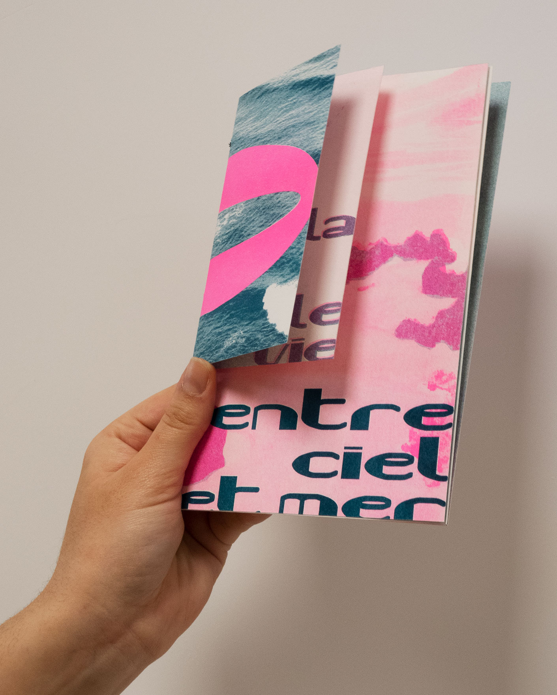
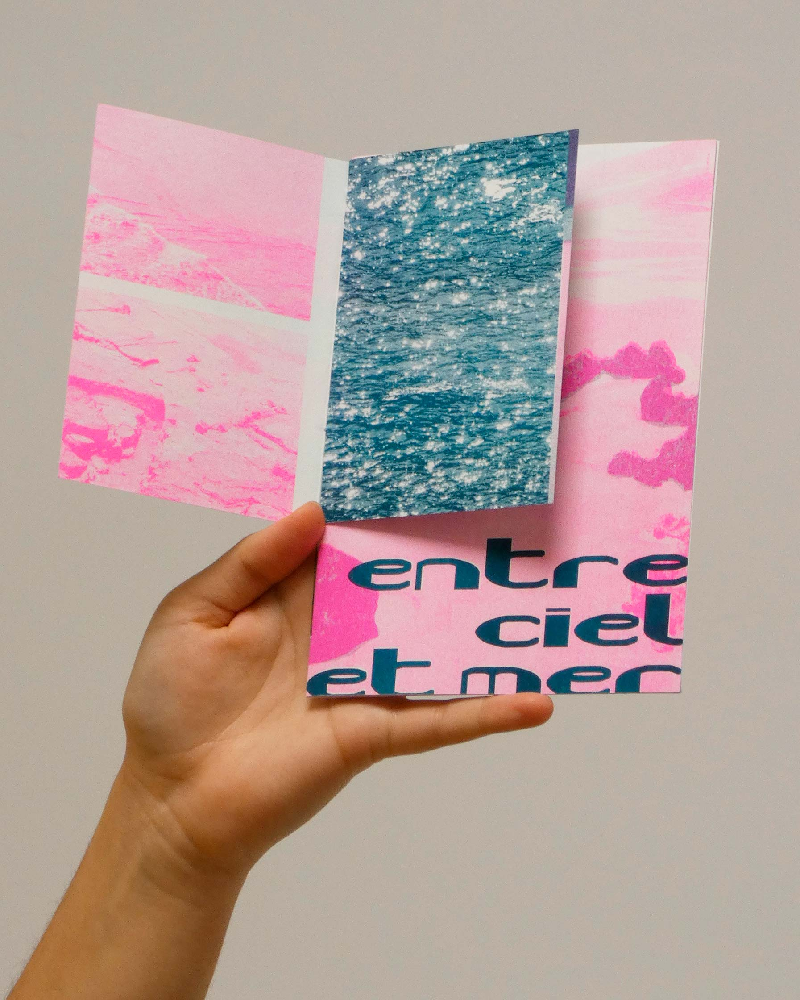
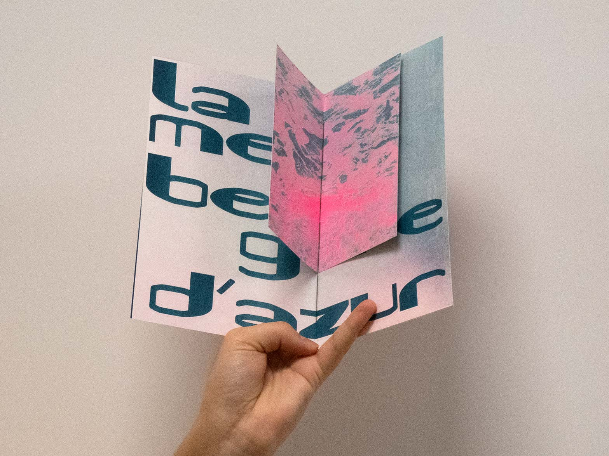
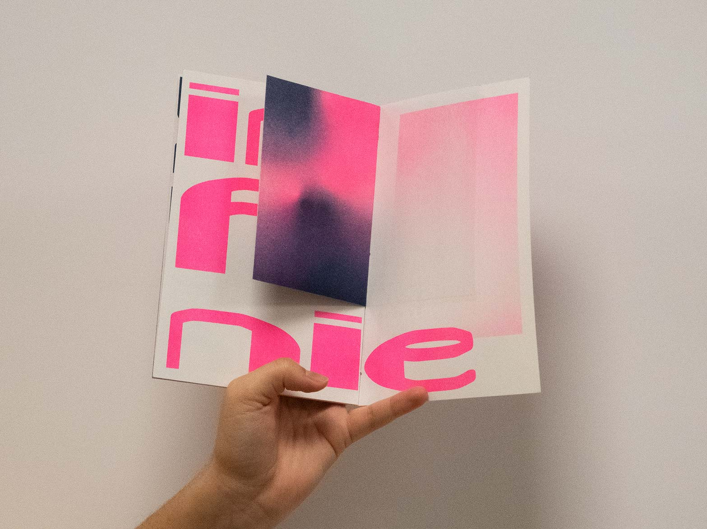
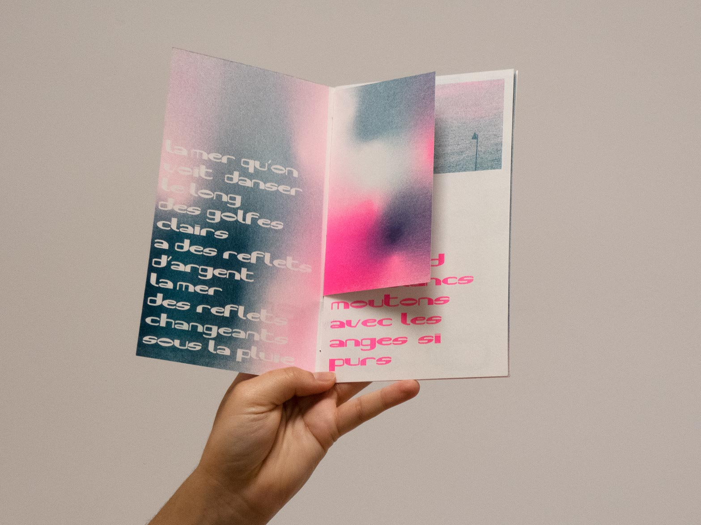
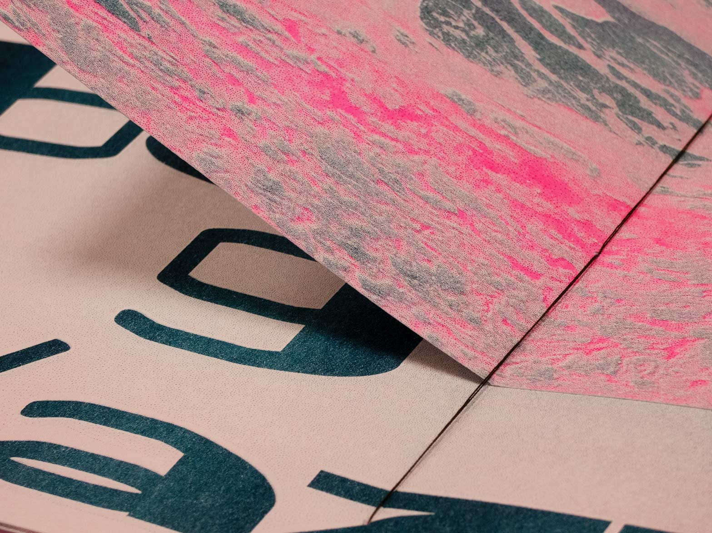

ENTRE CIEL ET MERfanzine en risographie
(2021)
éditionrisographiespécimen Kouaa font
Ce fanzine en risographie donne à voir la typographie Kouaa au travers des paroles de la chanson "La mer" de Charles Trenet. Réalisé durant mon stage en Espagne au sein du studio Los Patos, j’ai profité des nombreuses photos prises de l’océan durant le séjour, pour les faire dialoguer avec le texte. Cette confrontation photo-typo apporte un fort contraste aux visuels et créée une composition poétique. *voir projet précédent : Kouaa font*.






